기본반 2일차 2교시| RACING으로 배우는 RCT
2026-07-20
01. RCT는 무엇인가
02. 왜 RCT가 필요한가
03. RCT 결과를 신뢰할 수 있는 이유
04. 잘 설계된 RCT의 핵심 요소
05. 예시 연구: RACING Trial
RCT = 무작위 배정 + 비교군 + 사전정의된 결과 평가
Randomized Controlled Trial
RCT의 기본 구조
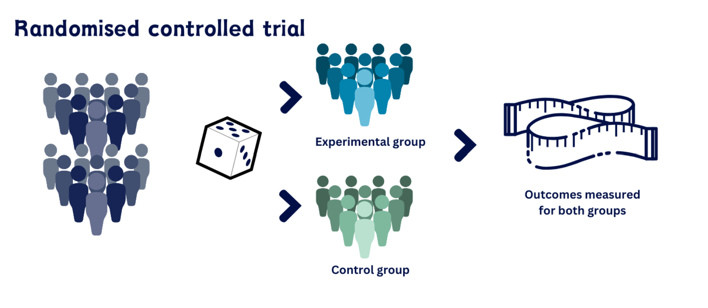
RCT는 치료 효과를 보기 전에, 두 군이 공정하게 비교될 수 있는 상태를 만들기 위해 필요하다.
환자의 나이, 질병 중증도, 기저질환, 생활습관은 치료 선택과 결과에 모두 영향을 줄 수 있다.
이런 차이가 치료 효과처럼 보이면 결과 해석이 왜곡된다.
RCT가 줄이려는 문제
RCT의 해결 방식
1:1 무작위배정
대상자를 치료군과 비교군에 같은 비율로 배정하는 방식이다.
가장 단순하게는 대상자마다 동전을 던져 앞면이면 치료군, 뒷면이면 비교군에 배정하는 것과 비슷하다.
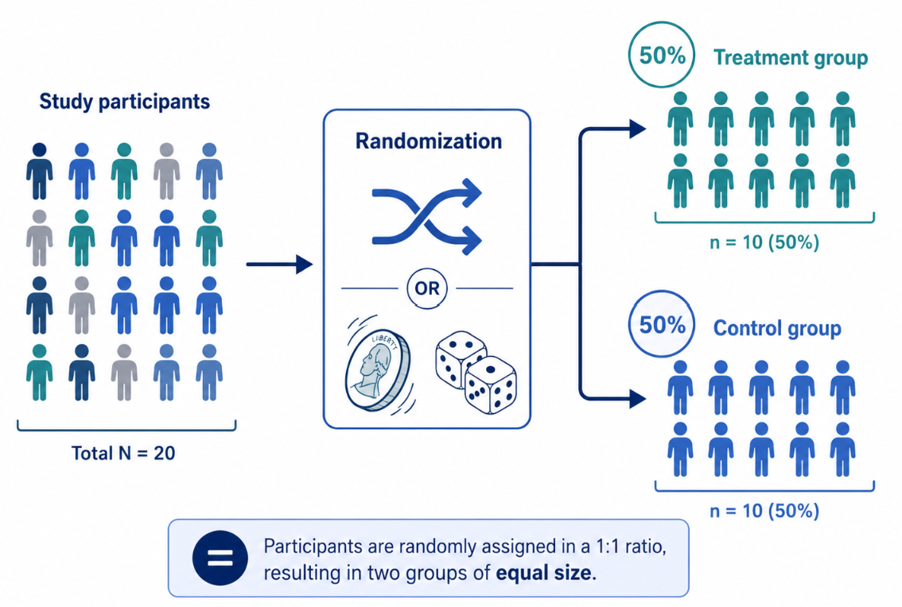
단순 1:1 무작위배정의 한계
무작위 배정은 매번 독립적으로 일어나기 때문에
50:50 확률로 배정해도 연구 진행중에는 두 군의 숫자가 크게 벌어질 수 있다.
이를 보완하는 방법이 블록 무작위배정이다.
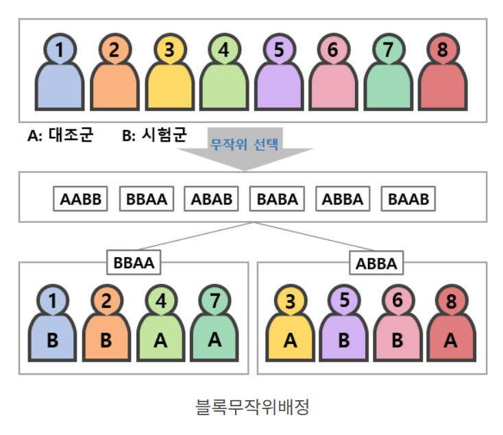
정해진 블록마다 A군과 B군의 수를 맞춰서 배정하는 방법이다.
예를 들어 블록 크기 4라면,
4명 안에 반드시 A군 2명, B군 2명이 들어간다.
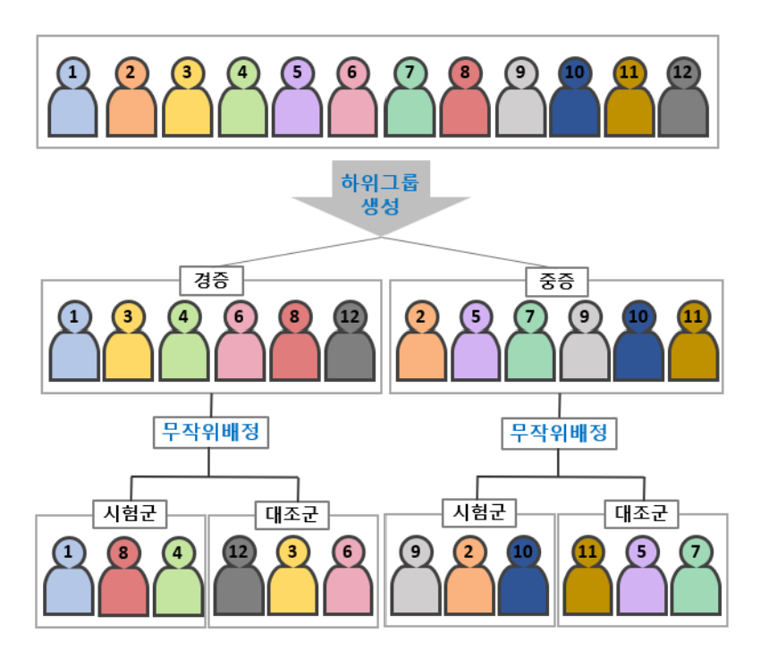
참고
블록 무작위배정은 A군과 B군의 환자수가 비슷하게 유지되도록 하는 것이고,
층화 무작위배정은 중요한 환자 특성이
A군과 B군 한쪽에 몰리지 않게 한다.
대상자를 중요한 특성에 따라 먼저 나눈 뒤,
각 층 안에서 A군과 B군으로 무작위배정하는 방법이다.
예시
당뇨병 여부가 예후에 중요하다고 가정하자.
단순 1:1 무작위배정을 한다면, 우연히 당뇨병 환자가 한쪽 군에 몰릴 가능성이 있다.
전체 100명 중 당뇨병 환자 40명이라고 하자.
층화 무작위배정은 먼저 당뇨병 유무로 나눈 뒤, 각 층 안에서 무작위배정한다.
따라서 두 군은 다음처럼 구성된다.
A군: 당뇨병 있음 20명 + 당뇨병 없음 30명 -> 총 50명
B군: 당뇨병 있음 20명 + 당뇨병 없음 30명 -> 총 50명
따라서 A군과 B군에서 당뇨병 환자와 비당뇨병 환자의 비율이 같아진다.
즉, 층화 무작위배정은 결과에 영향을 줄 수 있는 중요한 환자 특성이 두 군에 비슷한 비율로 배정되게 한다.
RCT의 신뢰도는 결과에 대한 사후적 해석이 아니라, 두 군이 공정하게 비교될 수 있도록 사전에 설계되었다는 점에서 나온다.
좋은 RCT는 연구 질문, 검정 가설, 평가 변수, sample size, 랜덤화가 서로 논리적으로 연결되어 있다.
연구 질문
Patient Intervention Control Outcome (PICO)
가설과 검정
연구 질문에 따라 적절한 가설과 검정방법 선택
일차 평가변수
연구 시작 전에 미리 정한 핵심 outcome
sample size
일차 평가변수, 예상 사건률, 기대 효과를 바탕으로 미리 정한 sample size
무작위배정
누가 어느 군에 들어갈지 예측 불가능
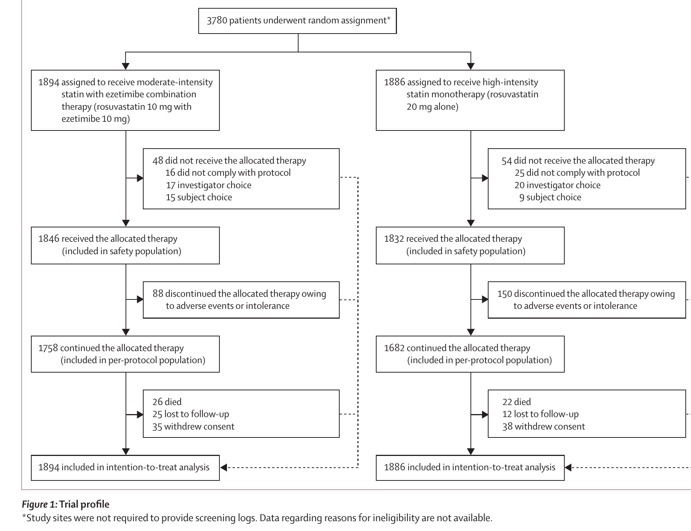
총 3,780명의 ASCVD 환자가 무작위배정되어
병합요법군 1,894명, 고강도 statin 단독요법군 1,886명으로 나뉘었다.
LDL-C < 100 mg/dL 여부와 당뇨병 유무에 따라 층화 무작위배정하여,
치료 결과에 영향을 줄 수 있는 환자 특성이 한쪽 군에 몰리지 않도록 했다.
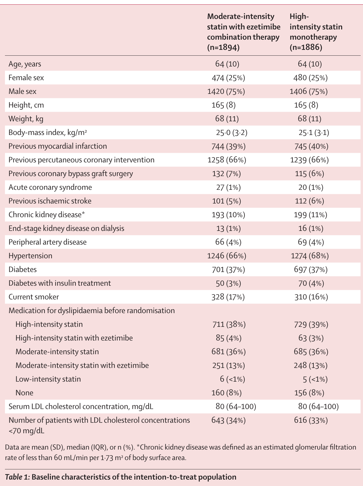
이제 RACING Trial의 RCT의 핵심 요소를 어떻게 구현했는지 하나씩 확인한다.
핵심 연구 질문 (Primary Objective)
PICO
비열등성 검정
Secondary Efficacy Objective
우월성 검정
Secondary Safety Objective
Safety 비교
평가변수는 치료 효과와 안전성을 무엇으로 판단할지 미리 정한 기준이다.
일차 평가변수(primary endpoint): 이 연구의 핵심 outcome.
3년 동안 아래 사건 중 하나라도 발생하면 primary endpoint가 발생한 것으로 판단했다.
심혈관 사망 + 주요 심혈관 사건 + 비치명적 뇌졸중
이차 유효성 평가변수(secondary efficacy endpoint): 치료 효과를 추가로 확인하기 위한 outcome.
안전성 평가변수(safety endpoint): 치료가 얼마나 안전하고 지속 가능한지를 보기 위한 outcome.
일차 평가변수- 비열등성 검정
이차 평가변수- 우월성 검정
왜 RCT에서 중요한가
선행 연구(IMPROVE-IT Trial)에서 일차 평가 변수 예상 event rate을 잡았음. 병합요법: 13%, 단독요법 14%.
비열등성 margin: 2.0%p
dropout (loss-to-follow-up): 15%
따라서 양군합계, 실험에 참여하는 총 대상자수는 약 3780명이어야 한다.
좋은 RCT에서 표본 수는 독립적인 숫자가 아니라, 연구 질문, 평가변수, 검정 가설이 연결되어 나온 결과이다.
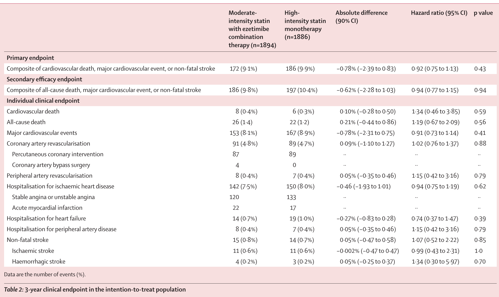
일차 평가변수 비열등성 검정
비열등성 margin:2.0%p
두 치료요법의 차의 90% 신뢰구간은 (-2.39, 0.83)
신뢰구간의 upper bound(0.83)이 사전에 정한 비열등성 margin (2.0)보다 작기 때문에 병합요법이 단독요법에 비열등하다고 할 수 있다.
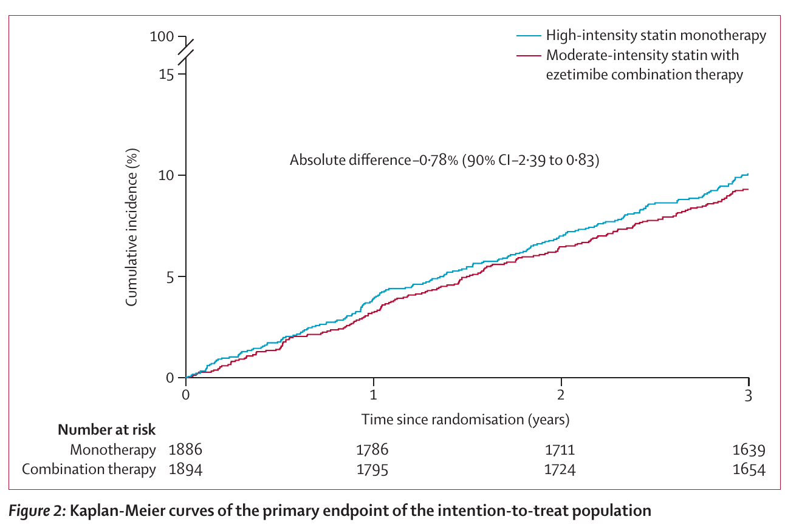
일차 평가변수 생존분석
일차 평가변수의 발생 여부뿐 아니라 언제 event 발생했는지까지 고려하여 분석함.
K-M 곡선은 시간에 따라 사건이 얼마나 누적되는지 보여주는 그림이고, 이를 통해 두 치료요법의 사건 발생 양상은 전반적으로 비슷함을 확인할 수 있다.
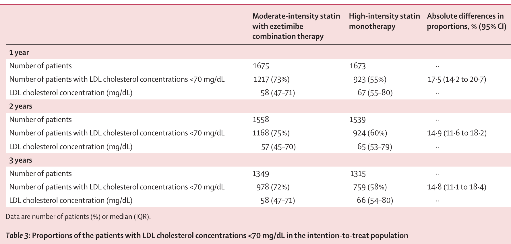
이차 평가변수 우월성 검정
모든 시점에서 병합요법의 LDL-C 목표 달성률이 더 높았기 때문에,
지질 조절 효과 면에서는 병합요법이 더 유리한 결과를 보였다.
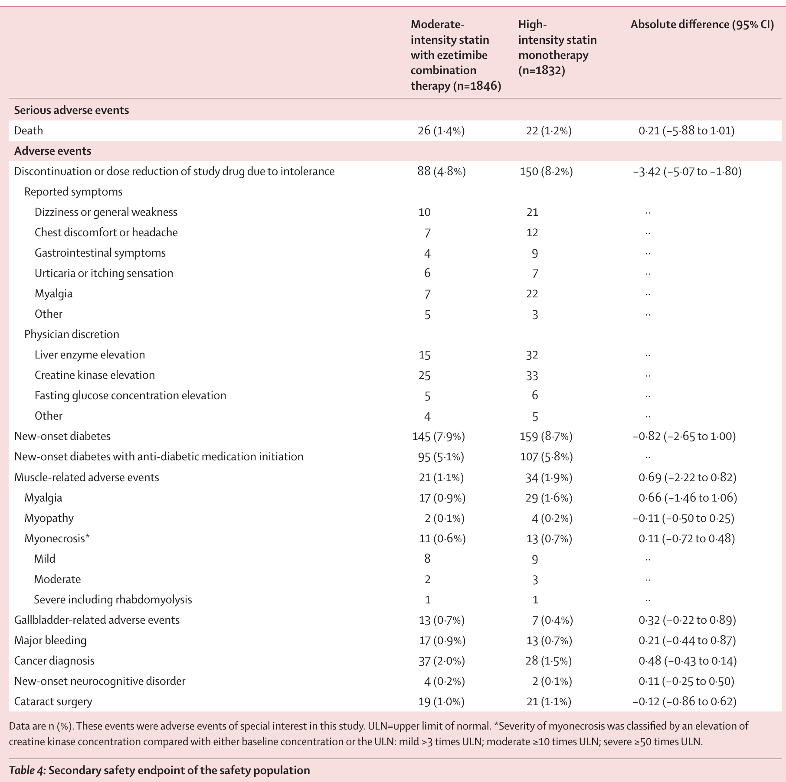
안전성 평가변수
약제 불내성으로 인한 중단 또는 감량은 병합요법군에서 유의미하게 더 적었다.
새로 발생한 당뇨 합병증, 근육 관련 이상반응은 병합요법군에서 더 적게 나타났지만 유의미한 수준은 아니었다.
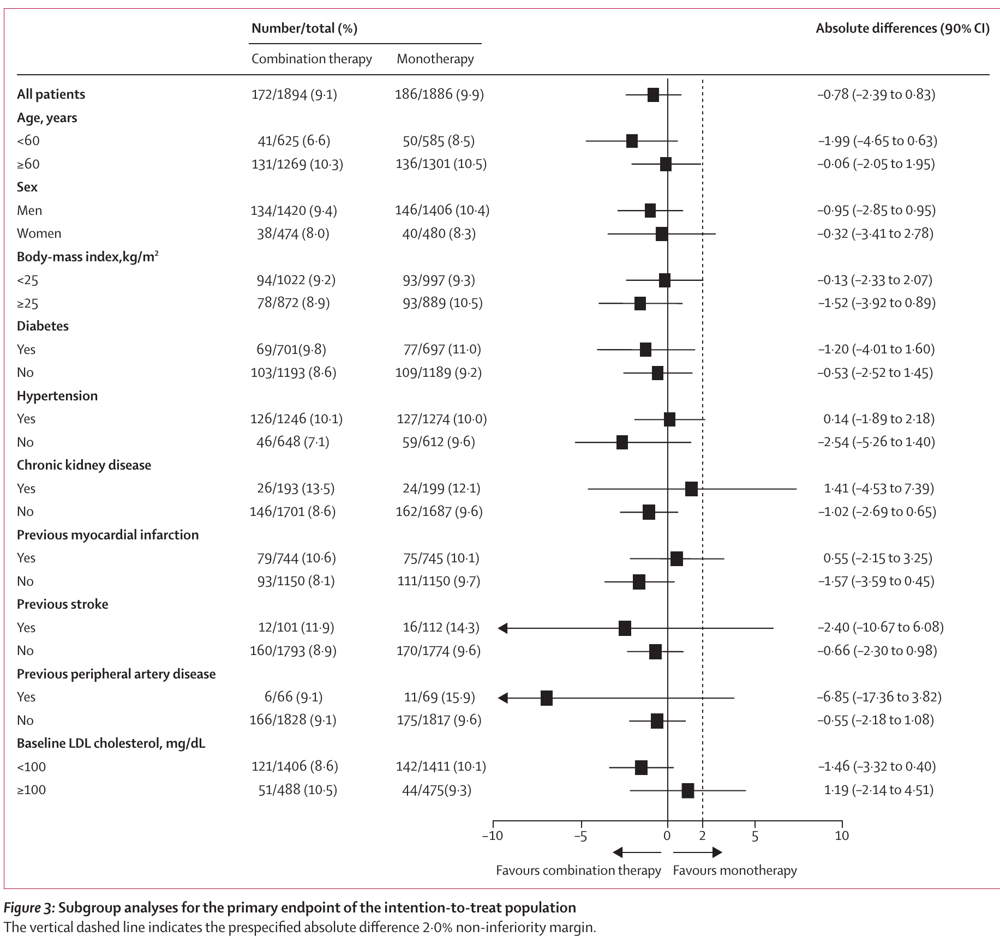
하위군 분석
하위군 분석은 일차 평가변수 결과가 특정 환자군에서만 나타난 것인지 확인하는 보조분석.
나이, 성별, BMI, 당뇨, 고혈압, 과거 심혈관 질환, baseline LDL-C에 따라 하위군을 나눠서 분석했다.
분석 결과, 하위군 전반에서 두 치료요법의 차이는 일관된 방향을 보였다. 따라서 하위군별 치료효과가 크게 다르다고 보기 어렵다.
RCT는 두 군을 공정하게 비교하기 위해 연구 시작 전부터 설계된 임상 연구 방법이다.
RCT의 정의
연구 대상자를 무작위로 치료군과 비교군에 배정하고, 사전에 정한 결과를 같은 기준으로 비교하는 연구 설계이다.
RCT가 필요한 이유
나이, 중증도, 기저질환 같은 교란 요인이 한쪽 군에 치우치지 않도록 하여 치료 효과를 더 공정하게 평가하기 위해서이다.
좋은 RCT의 핵심 요소
연구 질문(PICO), 가설 검정, 일차 평가변수, sample size, 무작위배정이 서로 논리적으로 연결되어 있어야 한다.
RACING Trial에서 확인한 점
연구 질문 → 평가변수 → 비열등성 검정 → sample size → 랜덤화가 하나의 흐름으로 설계되어 있었다.
결국 RCT의 핵심은 두 군을 공정하게 비교할 수 있도록 연구 질문, 평가변수, 표본수, 랜덤화가 사전에 일관되게 설계되었는지를 확인하는 것이다.
Zarathu Co., Ltd.